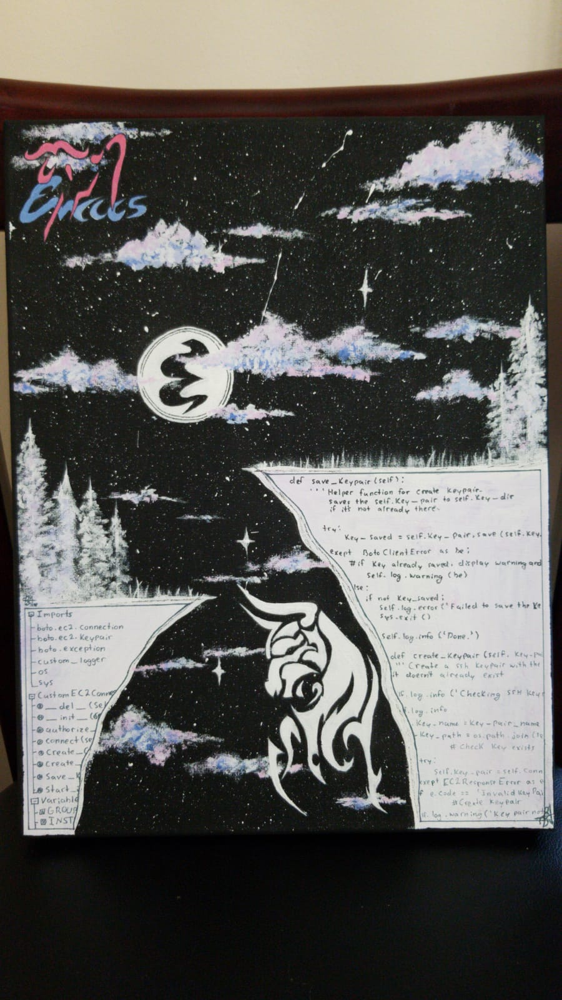
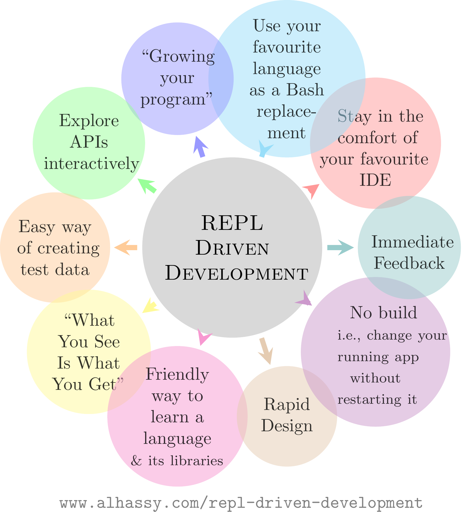
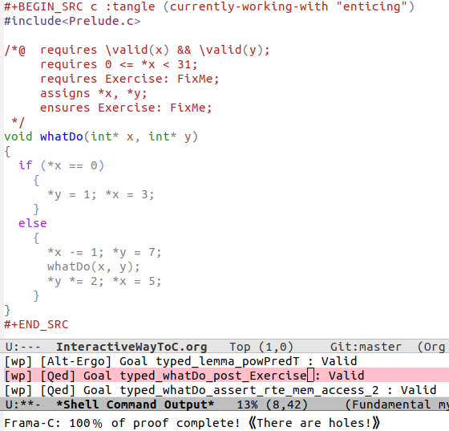

Here are some of my latest thoughts on emacs… such as thread-first and loop (•̀ᴗ•́)و

1. Clojure-style accessor in Emacs Lisp emacs lisp clojure programming_languages
Clojure-style accessor in Emacs Lisp
{kind=link}

badge:Read|more|green|https://alhassy.com/clojure-style-accessor-in-emacs-lisp|read-the-docs
2. 💐 Repl Driven Development: Editor Integrated REPLs for all languages 🔁 :repl-driven-development vscode emacs javascript java python lisp clojure haskell arend purescript idris racket
💐 Repl Driven Development: /Editor Integrated REPLs for all languages/ 🔁
{kind=link}

@@ /tdlr:/ This library provides the Emacs built-in kbd:C-x_C-e behaviour for arbitrary languages, provided they have a primitive cli REPL.
badge:Read|more|green|https://alhassy.com/repl-driven-development|read-the-docs
3. Arabic Roots: The Power of Patterns arabic javascript emacs
Arabic Roots: The Power of Patterns

badge:Read|more|green|https://alhassy.com/arabic-roots|read-the-docs
4. 💐 Making VSCode itself a Java REPL 🔁 :repl-driven-development vscode emacs javascript java python ruby clojure typescript haskell lisp
💐 Making VSCode itself a Java REPL 🔁

badge:Read|more|green|https://alhassy.com/making-vscode-itself-a-java-repl|read-the-docs
5. 💐 VSCode is itself a JavaScript REPL 🔁 :repl-driven-development vscode emacs javascript
💐 VSCode is itself a JavaScript REPL 🔁

badge:Read|more|green|https://alhassy.com/vscode-is-itself-a-javascript-repl|read-the-docs
6. Typed Lisp, A Primer :types:lisp:program-proving emacs
Typed Lisp, A Primer
{kind=link}
badge:Read|more|green|https://alhassy.com/TypedLisp|read-the-docs
7. An Interactive Way To C :program-proving:c:emacs:frama-c:
An Interactive Way To C
{kind=link}

badge:Read|more|green|https://alhassy.com/InteractiveWayToC|read-the-docs

Life & Computing Science by Musa Al-hassy is licensed under a Creative Commons Attribution-ShareAlike 3.0 Unported License